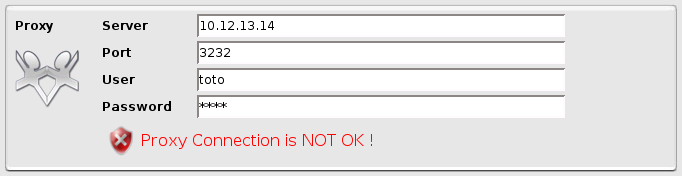
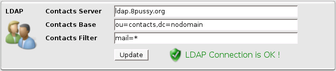
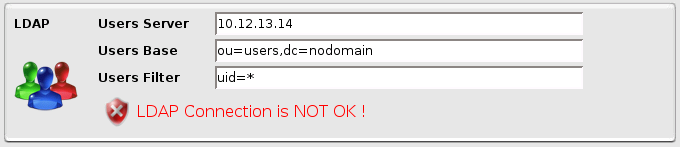
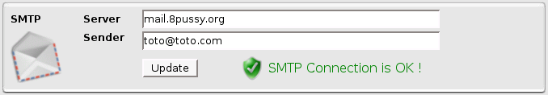
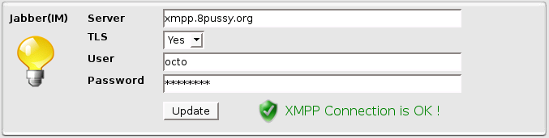
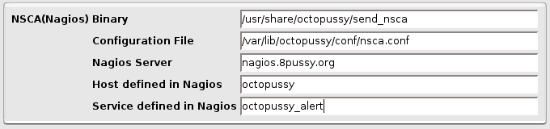

System Configuration
System Configuration
Here you can set everything related to Octopussy System Configuration.
For each configuration, it will show if the connection is  ok or
ok or  not.
not.
Backup & Restore
System Backup/Restore Box
If you want to make a backup of your configuration, click on the  Backup button.
Backup button.
It will backup your configuration on the Octopussy server and will open a dialog box to save it localy.
The Backup contains:
- System configuration (Database, LDAP, NSCA, Proxy, SMTP & XMPP)
- Alerts configuration
- Contacts configuration
- Devices configuration
- DeviceGroups configuration
- Locations configuration
- Maps configuration
- Plugins configuration
- Reports configuration
- Schedules configuration
- Services configuration
- Storages configuration
- Tables configuration
- Timeperiods configuration
- Users configuration
If you want to restore an old configuration, select your old configuration from the right list and click on the  Restore button.
Restore button.
Every time you will restore a configuration, a dialog window will ask you to confirm.
Database Configuration
First, logs ARE NOT saved in Database ! Logs are stored in zipped text files.
Database is only used for 2 things:
- save Alerts results
- handle Report Data during Report Generation
System Database Configuration Box
Proxy Configuration
Proxy is only used by the  Updater to get updates (Reports, Services...) from Octopussy web site.
Updater to get updates (Reports, Services...) from Octopussy web site.
If you don't need proxy to access web sites or don't want to do updates from Octopussy web site, leave all fields blank.

System Proxy Configuration Box
LDAP Contacts Configuration
LDAP Contacts are used to add more contacts to  Contacts list.
Contacts list.
Your LDAP Contacts entries need to have a 'cn' and a 'mail' field.
These new entries will appear with the type 'LDAP' in the Contacts list.

System LDAP Contacts Configuration Box
LDAP Users Configuration
LDAP Users are used to add more users to  Users list.
Users list.
Your LDAP Users entries need to have a 'uid' and a 'password' field.
These new entries will appear with the type 'LDAP' in the Users list.

System LDAP Users Configuration Box
SMTP Configuration
SMTP is only used to send  Alerts or
Alerts or  Reports by Email.
Reports by Email.
You can only send Email to Email Address defined in Contacts.

System SMTP Configuration Box
Jabber Configuration
Jabber (XMPP Protocol) is only used to send Alerts by Instant Messaging.
You can only send Message to Instant Messaging Address defined in Contacts.

System Jabber Configuration Box
NSCA Configuration
NSCA is only used to send Alerts to a Nagios server.
It will use the specified 'NSCA Binary' with the configuration file 'Configuration File' to send the message to the server 'Nagios Server'.
It will update the 'Host/Service specified.

System Nagios NSCA Configuration Box